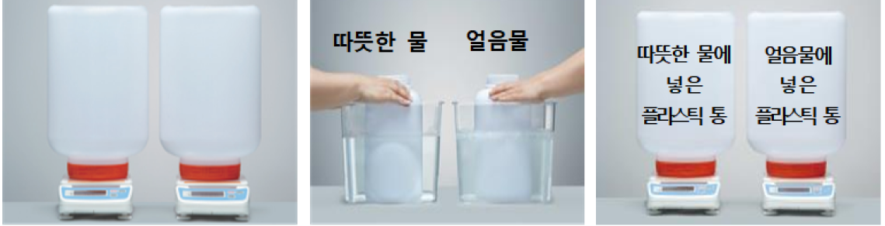

1번
다음은 플라스틱 통 두 개를 뚜껑을 닫은 후 처음 무게를 측정하고, 따뜻한 물과 얼음물이 각각 담긴 수조에 뚜껑을 연 채로 5분간 넣은 후, 다시 뚜껑을 닫아 변화된 무게를 측정한 결과입니다.이를 통해 알 수 있는 점을 두 가지 고르세요.

개요
구분
따뜻한 물에 넣은 플라스틱 통
얼음물에 넣은 플라스틱 통
처음 무게(g)
285.6
285.6
5분 후 무게(g)
285.3
285.8